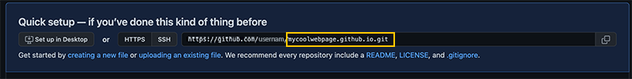

PREREQUISITES
Go to GitHub Sign In portal to access your account or sign up for a FREE account.
Go to the Repositories tab and click on new.
Add a repository name (i.e. profilename/mycoolwebpage.github.io). This name will be the name of your webpage.
Click "Create repository".

Select Uploading an existing file to add files stored on your computer.
Drag or choose your files (index.html and files). Click on the commit changes button at the bottom of the page.
Review your changes by accessing your repository mycoolwebpage.github.io on a browser.